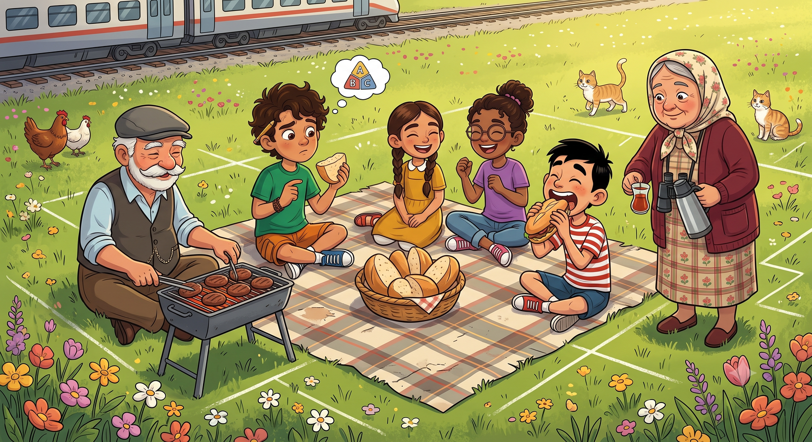
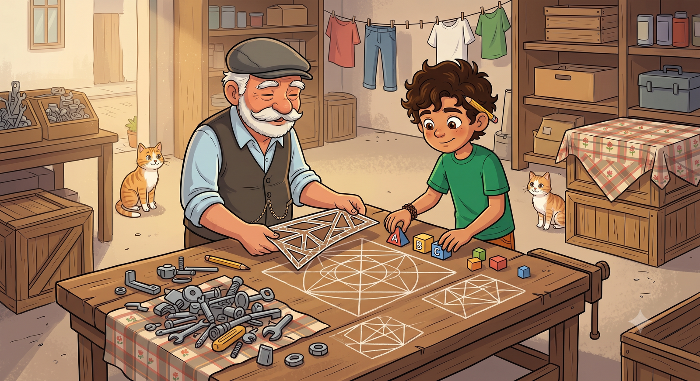
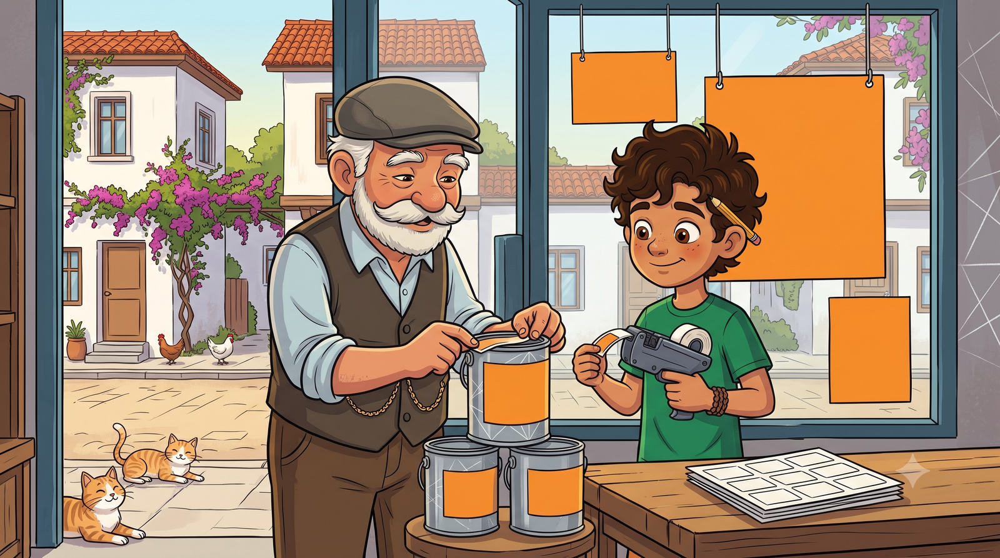
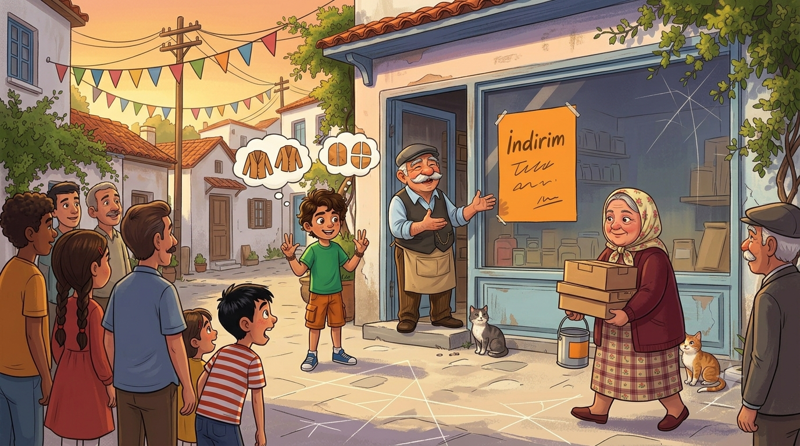

🏷️ 4. TEMA · KESİRLERİ FARKLI BİÇİMLERDE TEMSİL ETME
Sayıların Üç Dili
Bahçenin ilk hasadı piknikle kutlanıyor ama yarım ekmek hesabı beni fırında ter döktürüyor. Sonra dedemin dükkânında indirim başlıyor ve aynı fiyat karşıma üç ayrı yazımla çıkıyor: 1/2, 0,5, %50... Hangisi doğru? Hepsi! Çünkü sayılar üç dil konuşuyor — ve ben üçünü de öğrenmek üzereyim.
Bahçemizin ilk domatesleri kızarır kızarmaz dedem kararı açıkladı: "Hasat şerefine piknik!" Yer belli: tren hattının oradaki çayır. Menü belli: ekmek arası köfte. Kural da belli: israf yok, herkese yarım ekmek.
Ekmek almak bana düştü. Cemal Usta'nın fırınında sıra bendeydi: "Kaç ekmek evlat?" İçimden saydım: beş çocuk, dedem, Mübeccel Teyze — yedi kişi, herkese yarım... "Yedi yarım ekmek!" dedim. Cemal Usta kaşını kaldırdı: "Öyle ekmek olmaz. Kaç TAM ekmek, onu söyle." Defteri açtım: iki yarım bir tam ederse, yedi yarımdan üç tam çıkar, bir yarım da artar. "Üç buçuk!" Cemal Usta dört ekmek uzattı: "Artan yarım da serçelerin olsun."
Piknikte olanları dedeme anlattım. Köftesini bitirdi, kasketini geriye itti: "Senin şu yedi yarım var ya — matematikçiler ona 7/2 der: bileşik kesir. Senin bulduğun üç buçuk da aynı şeyin öbür söylenişi: 3 tam 1/2 — tam sayılı kesir. Miktar bir, söz iki. Sayılar tek dil konuşmaz evlat; sen daha ilk dilin ilk kelimelerindesin." O gün ne demek istediğini tam çözemedim. Ertesi gün dükkânda çözdüm.
🥖 Defterime not aldım: Pay ≥ payda ise bileşik kesir: 7/2. Aynı miktar tam sayılı kesir olarak da yazılır: 3 tam 1/2. Aynı miktar, iki gösterim!

Ertesi sabah dükkânda sayım vardı. Depoda satılmayı bekleyen ne varsa ortaya çıktı: kovalar, fırçalar, üç koli mandal. Dedem "Bunlara indirim yapacağız," dedi, "ama önce kasa. Kasasını bilmeyen, indirimini bilemez." Bozuk para gözü ağzına kadar kuruş doluydu; görev bana ve Elif'e verildi. Dedem unvanı da ihmal etmedi: "Fiyat Etiketi Genel Sorumlusu" — şimdilik vekâleten, muhtarlık makamının onayı sonra alınacakmış.
Elif kuruşları onarlı kuleler hâlinde dizerken dersi de dizdi: "Bak abi: 1 lira, 100 kuruş demek. Öyleyse 50 kuruş, liranın 100'de 50'si: 50/100. Sadeleştir: 1/2 — yarım lira! Elindeki 25 kuruş: 25/100, çeyrek lira. Şu 10 kuruş: 10/100, yani 1/10." Meğer kasanın gözünde bozuk para değil, kesir koleksiyonu duruyormuş da kimsenin haberi yokmuş.
Tam o sırada Emre camdan içeri uzandı: "Ne yapıyorsunuz?" — "Kesir sayıyoruz." Emre cebindeki bütün servetini tezgâha koydu: 75 kuruş. "Bunu da dizin: 75/100. Ben bugünlük dörtte üç adamım." Elif kuleye ekledi: "Sadeleşmişsin Emre, yakışmış."
🪙 Defterime not aldım: 1 TL = 100 kuruş. Kuruşlar paydası 100 olan kesirlerdir: 50 kr = 50/100 = 1/2 TL, 25 kr = 25/100 = 1/4 TL. Paydası 10 veya 100 olan kesirler özel: onlar başka dillere kolayca çevrilir!

Sıra etiketlere geldi. İlk mal: kırmızı kova. Fiyatı: on dört lira yirmi beş kuruş. Ben de etikete harfi harfine bunu yazdım. Etiket küçük, yazı uzun — üç etiket birden harcadım. Dedem manzarayı görünce derin bir nefes aldı: "Evlat, sen hiç market etiketi okumadın mı? Rakamla yaz, araya virgül koy: 14,25. Virgülün solu liralar — tam kısım. Sağı kuruşlar — ondalık kısım." Bir virgül, üç etiketlik derdi bitirdi. Meğer market etiketlerindeki o virgüllü sayılar, kesirlerin ikinci diliymiş: ondalık gösterim.
Elif okunuşunu da öğretti: "Virgülden sonra tek basamak varsa onda, iki basamak varsa yüzde diye okunur: 0,7 → sıfır tam onda yedi. 14,25 → on dört tam yüzde yirmi beş." İtiraz ettim: "Ama biz ona on dört lira yirmi beş kuruş diyoruz!" Elif omuz silkti: "Para dili öyle, matematik dili böyle. Aynı sayı, iki dil konuşuyor." Bu cümleyi defterime yıldız koyarak yazdım.
Akşama kadar bütün rafları bitirdim: 7,50... 36,25... 52,90... Virgüller ip gibi hizaya girdi. Dedem etiketleri tek tek denetledi ve iki kelime etti: "Marangoz gibi." Bizim mahallede bundan büyük övgü çıkmaz. Ancak muhtardan "resmî evrak" çıkabilir. Çıkacaktı da.
🏷️ Defterime not aldım:Ondalık gösterim = virgüllü yazım: 14,25. Virgülün solu tam kısım, sağı ondalık kısım. Okunuş: 1 basamak → "onda", 2 basamak → "yüzde": 0,7 = "sıfır tam onda yedi".

Cuma sabahı dedem cama kocaman bir tabela astı: "TÜM FAZLA MALLARDA %40 İNDİRİM." İlk soran Emre oldu: "Bu yüzde kırk dediğin tam olarak ne kadar?" Ve o an, üç günün bütün parçaları kafamda tık diye yerine oturdu: "Yüzde kırk, 100'de 40 demek: 40/100. İstersen virgülle söyle: 0,40. Kesir dili, ondalık dili, yüzde dili — üç söz, tek sayı!" Sayıların üçüncü dilini de çözmüştüm.
Dedem tezgâhın arkasından duymuş. Kasketini çıkarıp önüme koydu — bizim mahallede madalya töreni böyle yapılır. "Madem çözdün, şunu da ekle," dedi: "100 liralık kovada %40 indirim 40 lira eder; kova 60 liraya iner. Yüzdeyi bilen, cüzdanını bilir."
İndirim haberi mahalleye çarşaf gibi yayıldı; öğleden sonra dükkânın önü bayram yerine döndü. Mübeccel Teyze bile balkondan indi, üç koli mandalı birden kaptı: "Yüzde kırksa kırk; hesabını ben tutarım." Tuttu da. Akşamüstü önce megafon duyuldu, sonra muhtar göründü; elinde resmî evrak: "Sayın Etiket Sorumlusu! Tüketici hakları gereği ETİKET DENETİMİ başlatılmıştır! Her etiketin üç dili de sorgulanacaktır!" Defterimi kaptım. Hazırdım.
🎉 Defterime not aldım:% sembolü "yüzde" demektir: %40 = 40/100 = 0,40. Kesir, ondalık, yüzde — aynı miktarın üç dili! Paydası 10 veya 100 yapılabilen her kesir üç dilde de söylenebilir: 1/2 = 5/10 = 50/100 = 0,5 = %50.

Etiket Denetimi! 🎯
Muhtar etiketleri tek tek soruyor. Verilen gösterimin DENGİ olanı seç — üç dil kuralını unutma!
⭐ Puan: 0❓ Soru: 1/5
🏅 Denetim Geçildi!
Muhtar evraka kocaman "UYGUNDUR" yazdı ve megafonla ilan etti: "Bu dükkânın etiketleri üç dilde de doğrudur!" Akşam dedem kasayı bir kez daha saydırdı; bütün kuruşları kesir diliyle söyledim, virgüllüsünü de yüzdesini de ekledim. "Kasa emin ellerde," dedi dedem. Vekâleten verilen unvan resmileşti.
Kâşif Defteri — bugün öğrendiklerimiz:
• Bileşik kesir ↔ tam sayılı kesir: 7/2 = 3 tam 1/2
• Kuruşlar paydası 100 olan kesirler: 50 kr = 50/100 = 1/2 TL
• Ondalık gösterim: tam kısım , ondalık kısım (14,25)
• Okunuş: 1 basamak "onda", 2 basamak "yüzde"
• Üç dil:1/2 = 0,5 = %50 — aynı miktar!